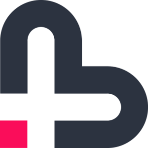

Bitmark · BTMKBitmark is a coin you earn by creating, sharing and helping, and its whole point is to be given away. Not held and watched. Handed on. Karma you can actually spend.
Bitmark is a peer-to-peer cryptocurrency built around a single act: giving. Handing someone a coin is called marking: giving a mark to something a person created, offered or shared. It works like a like or an upvote, except the thanks you pass on is real and travels with them. The coin does its job the moment you let it go.
A mark is appreciation you put into someone else's hands. Every mark is equal and divisible down to 0.00001, so there's always something to give, to anyone.
You come by marks the honest way: by creating, helping and showing up. It's reputation you can pass along: karma that means something because it was earned.
Marks are units of Bitmark, a Bitcoin-derived chain. Hold them, send them, give them. They move freely between people, wallet to wallet, with no gatekeeper.
Bitmark launched in 2014, from the era of fair coins, when a launch meant the chain opened to everyone on day one and nobody held a hidden head start. No founder allocation, no sale, no presale, no promises. Just a Scrypt proof-of-work chain that anyone could mine from the first block. It was never floated to be cashed in on. It was minted to be passed around.
Bitmark fuses proven features from Bitcoin and Litecoin rather than chasing novelty. Conservative by design, so the currency stays dependable for everyday use.
| Ticker | BTMK |
| Proof of work | Scrypt |
| Block time | 120 seconds |
| Difficulty retarget | 720 blocks (~1 day) |
| Initial block reward | 20 BTMK |
| Total supply | ~27.58 million BTMK |
| Launch | 2014 · fair launch |
Bitmark is open source, with no company behind a curtain, just code and a community. Read the protocol, build the wallet, and see how marking works for yourself.